passenger trailers
^ Projects infobox ^^
| image | FP04RJ0FKVQJ27A.jpg |
| designers | [[https:::www.instructables.com:member:liseman|Luke Iseman]] |
| dates | 2008 |
| vitamins | |
| materials | |
| transformations | |
| lifecycles | |
| tools | [[wrenches|Wrenches]] |
| parts | [[frames|Frames]], [[nuts|Nuts]], [[bolts|Bolts]], [[wheels|Wheels]], [[plates|Plates]] |
| techniques | [[wheels_and_axles|Wheels and axles]], [[tri_joints|Tri joints]], [[trusses|Trusses]] |
| files | |
| suppliers | |
| git | |
| licenses | [[https:::creativecommons.org:licenses:by-sa:4.0|CC BY-SA]] |
Introduction
The cycle rickshaw is a small-scale local means of transport. It is a type of hatchback tricycle designed to carry passengers on a for-hire basis. It is also known by a variety of other names such as bike taxi, velotaxi, pedicab, bikecab, cyclo, beca, becak, trisikad, sikad, tricycle taxi, trishaw, or hatchback bike.
As opposed to rickshaws pulled by a person on foot, cycle rickshaws are human-powered by pedaling. Another type of rickshaw is the auto rickshaw.
Challenges
- Weight distribution, in front of and behind the wheels
- Strength of tongue (connection between pedicab and bike)
- Passenger comfort
- Aesthetics
- Most importantly: stopping ability!
It really helps to ride for a pedicab service or otherwise establish an intimate familiarity with existing pedicab designs before jumping into this.
Approaches
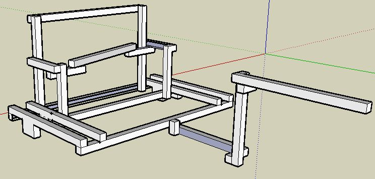
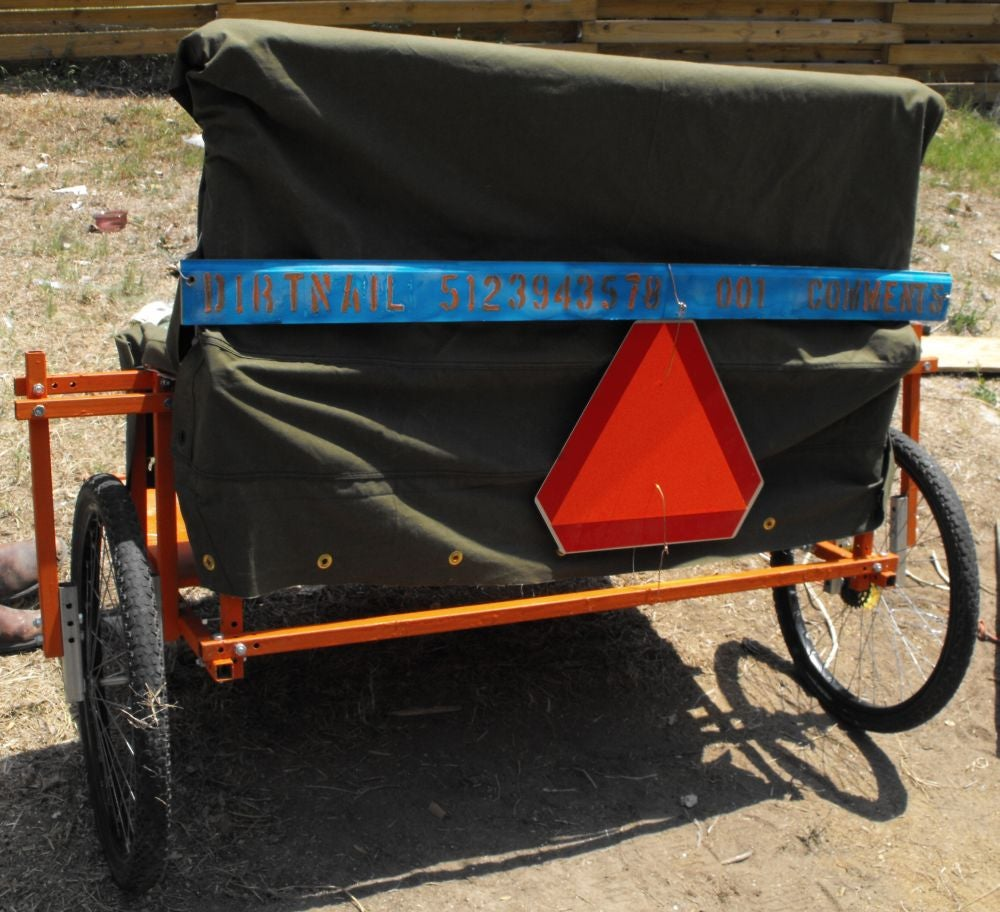
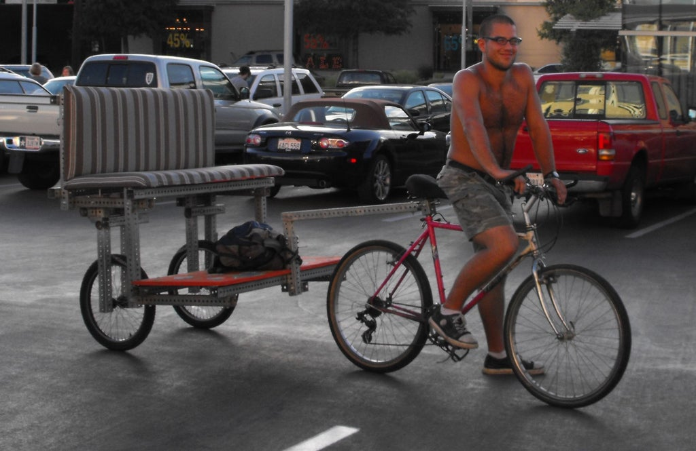
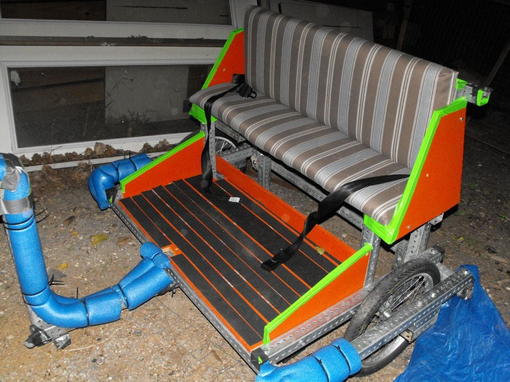
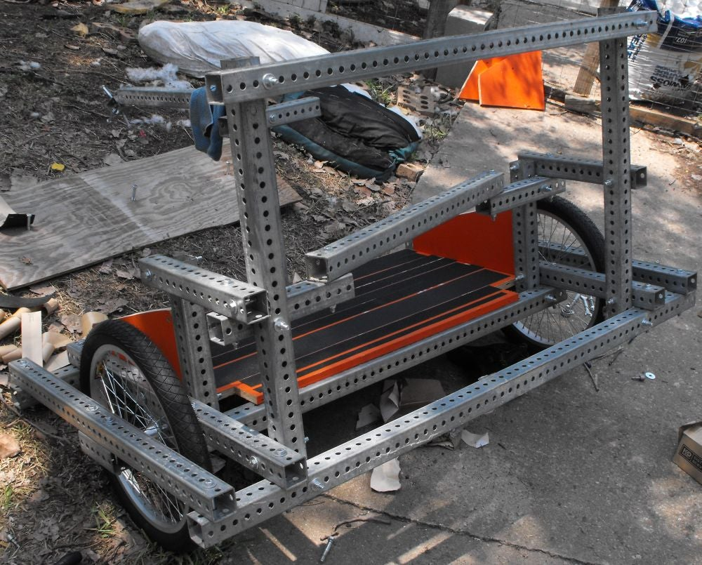
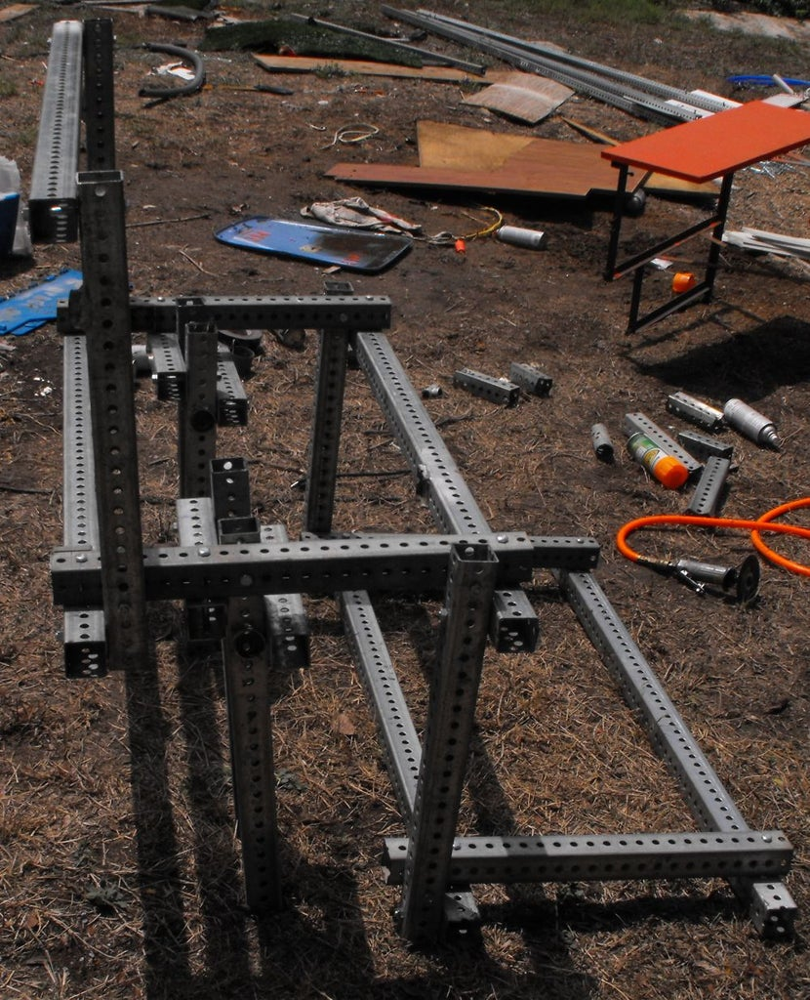
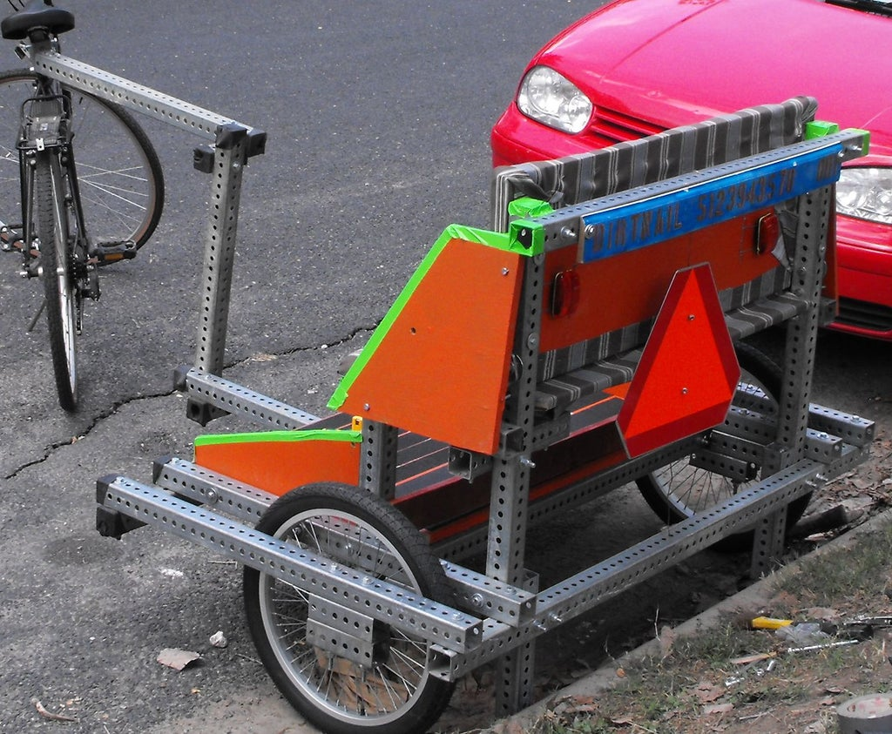
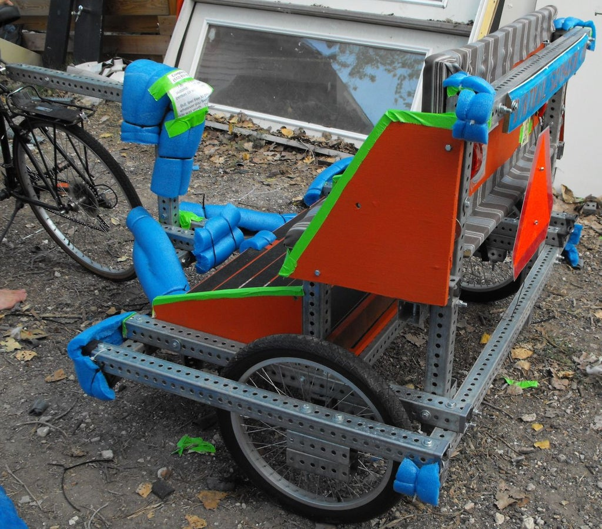
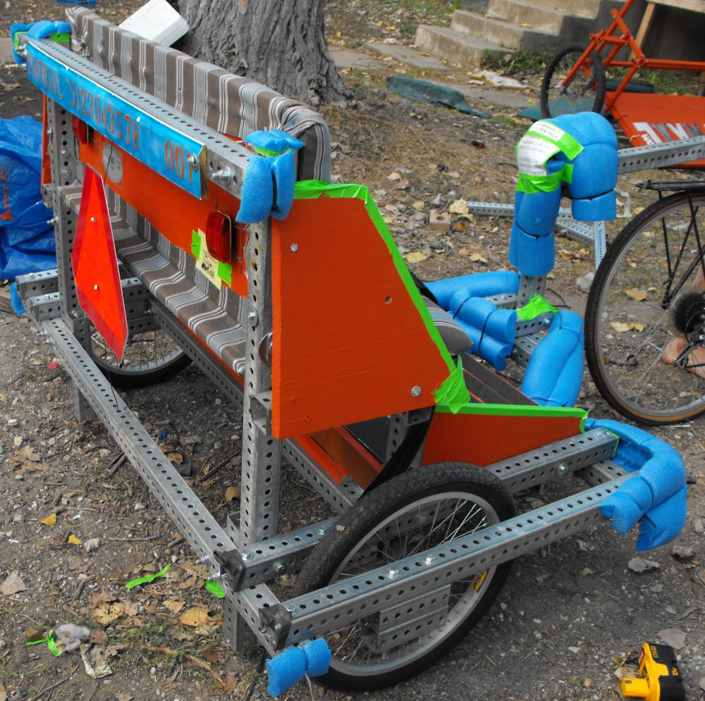
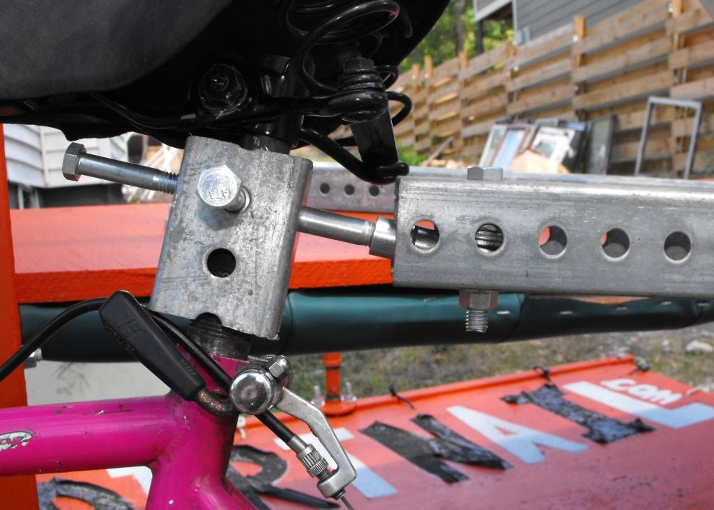
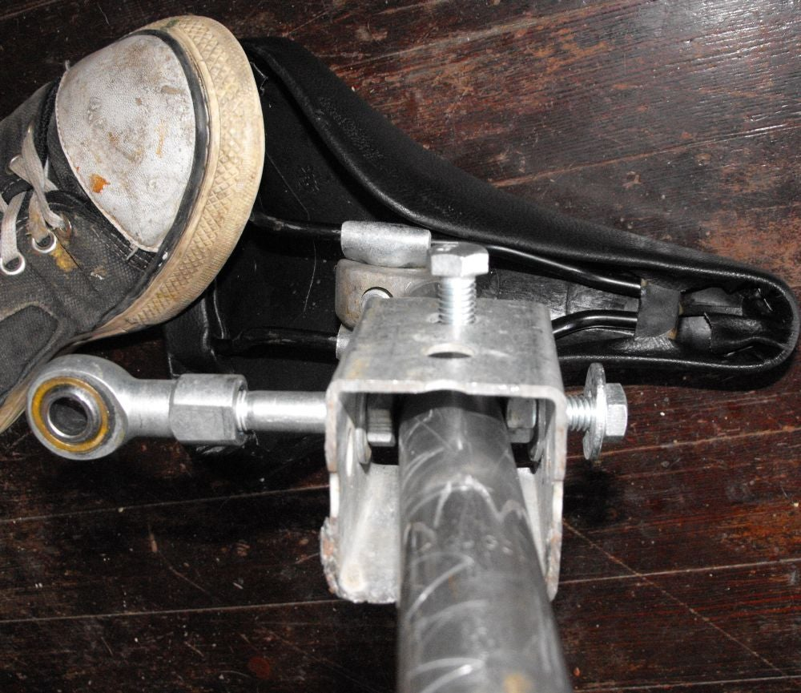
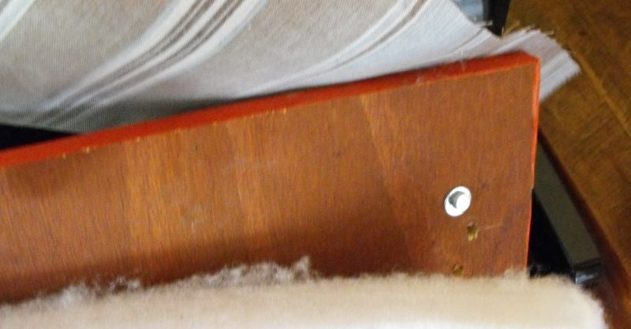
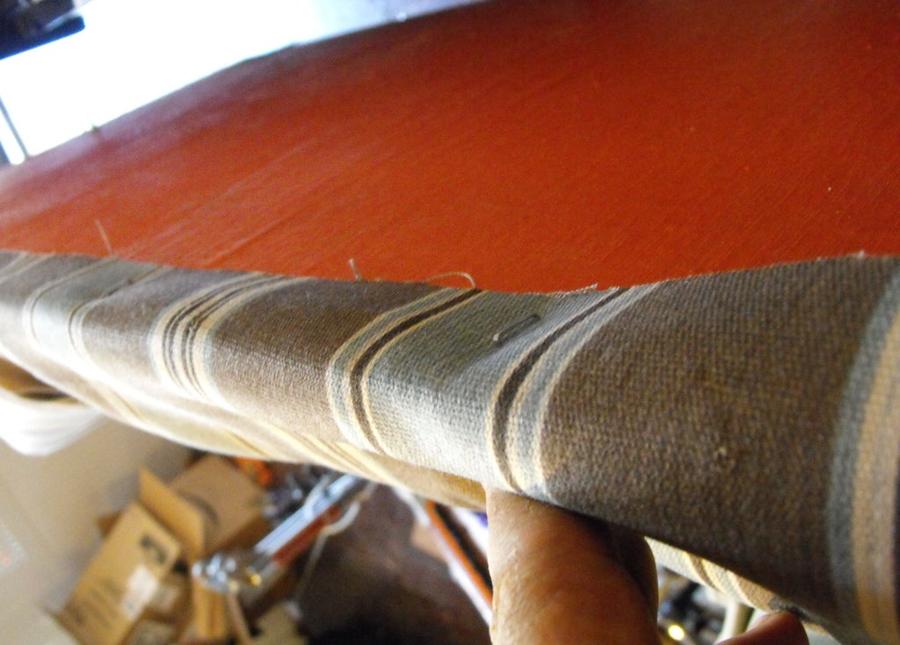
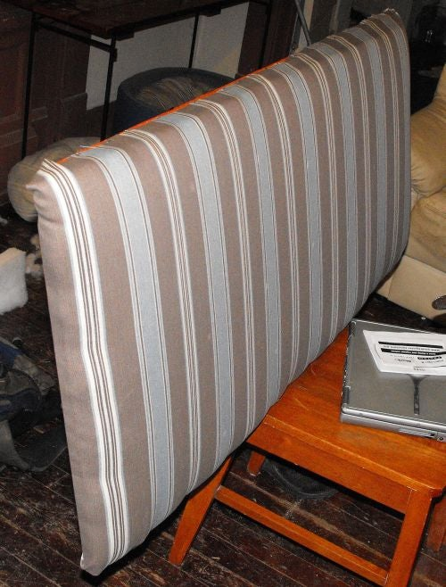
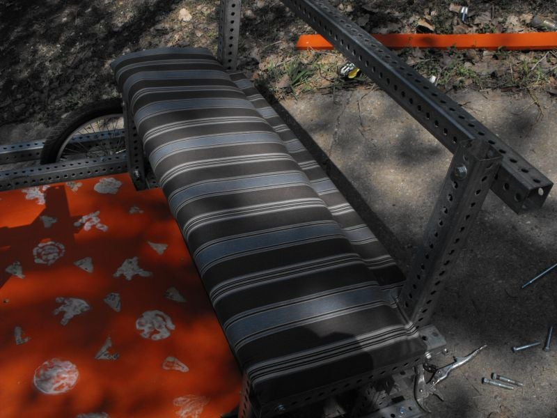
Here's what I used to make this monstrosity:
- 50-some feet Telespar (perforated galvanized steel tubing). You can read about its structural properties here.
- ~12 feet 1.75" Telespar, to reinforce the Telespar between the pedicab and the bike
- 60-odd bolts, mostly grade 5. ~45 of length 5", 5 @ 2.5", and ~10 at 7". Diameter 3/8", except for 2 9/16" grade 8 bolts used on connection to pedicab
- 60-odd locknuts, same diameters as bolts
- ~150 flat washers, 3/8"
- 3/4" plywood
- bright orange paint
- bright green duct tape
- bright blue pool wacky foam float things
- zip ties, for securing pool things
- female rod end, for pivot point between bike and trailer. I used this one(if link doesn't work, type in 'tf7' to load the product info page)
- high-visibility red blink lights
- screws, staples (size unimportant; use washers with screws to prevent from screwing through hole)
- outdoor fabric, a couple yards
- mildew-resistant stuffing, 2" thickness, couple yards
- spray paint, old molding (kind you'd put along a floor), and stencil (to create dirtnail sign)
- overly-priced non-slip tape (city regulation, for the floor)
- slow-moving vehicle sign (ditto)
And, I suppose wheels are helpful:) If you don't have bureaucracy to navigate in your metropolis, scavenge some strong wheels from a BMX bike. After getting shot down trying to get Craigslist wheels to pass inspection, I found the bike shop at which another local pedicab company buys wheels and ordered the same ones. At ~$130, the wheels were the most expensive part of this project.
The main tools I needed for this project were:
- Various metal grinding wheels. The most useful was the 10" one that worked with my cut-off saw. Careful with the sparks!
- A mask and an outdoor work environment. Breathing vaporized zinc, a product of cutting or welding galvanized steel, is a really bad idea. After reading this account, I particularly realize I should have worn a real tiny-particulate-filtering mask.
- Various vice grips and wrenches, mainly 3/8" and 9/16"
- drill with various bits, sized from below diameter of smallest screw to slightly larger than diameter of 3/8" bolt head
The area of the pedicab in front of the footrest gets a LOT of force applied to it: it's the end of a lever with your passengers at the other end.
My first designs bent so much that one actually bottomed out when I tried to brake, which would not have made for a very customer-friendly experience or me-friendly tip.
So, to arrive at the final product pictured, I found a couple of books on car trailer design (specifically, volumes 1 & 2 of M. M. Smith's "Trailers: How To Design & Build"). You can also check out what trailer hitches look like or just reason through some of the key points:
- load is spread between multiple attachment points to trailer
- tubing that bears the full weight of the pedicab is reinforced
- multiple grade 5 bolts secure each part of the tongue
My system of attaching the trailer to the bike basically relies on the female rod end to pull the full trailer's load via its attachment to my bike. There are definitely many other ways to do this; I want to adapt this to include redundant attachment between bike and trailer for a future version (ie 2 bolts instead of 1)...
Love or hate the look I've arrived at, here are the basics of how I achieved it:
- 3/4" plywood painted with exterior latex paint is more than strong enough for the floor, seat, and back surfaces
- outdoor fabric is stapled to the board on one side, stuffed with 2" thick mildew-resistant foam, and then stapled to the other 3 sides. pull the fabric taut around the foam to give this a nice overstuffed look
- zip ties with bits of pool foam covered the ends of the metal well enough for the city of austin's standards
- green neon duct tape makes the design louder and covers the edges of the plywood
References
<youtube>wM1F3SrUrWY</youtube>